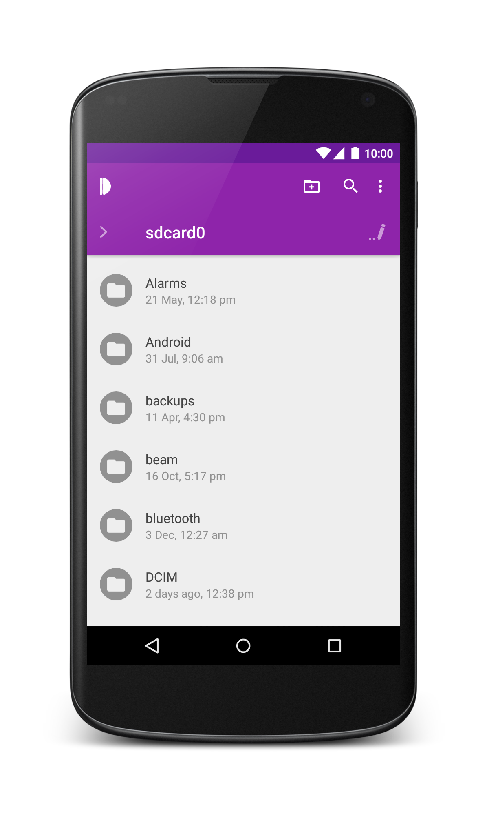
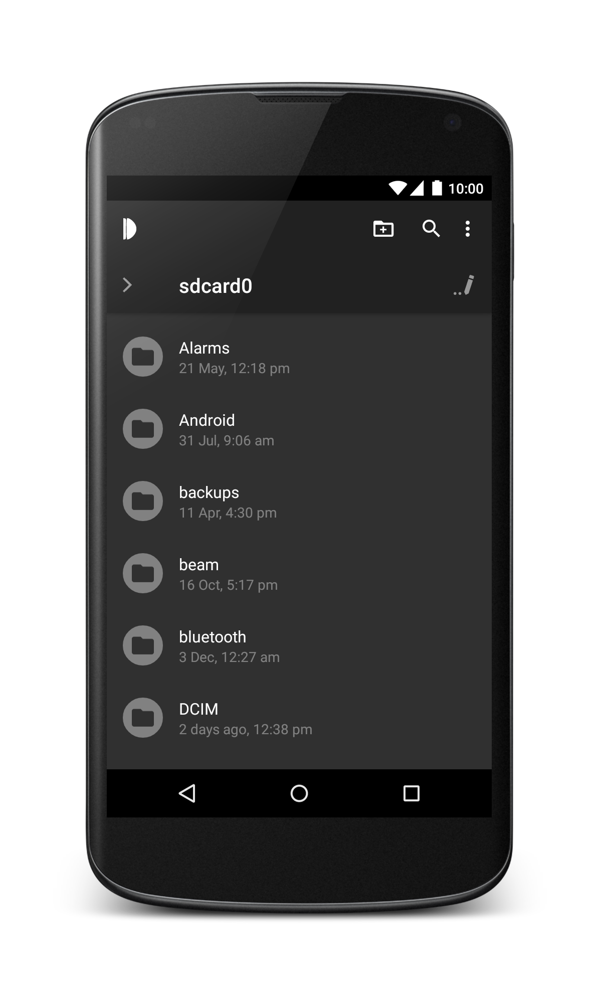
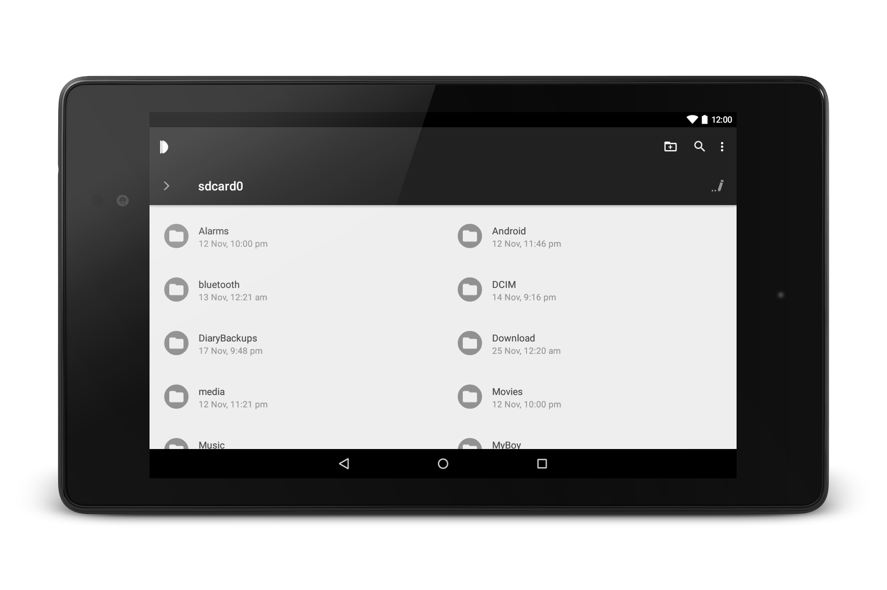

Introduction
Dir is a simple, beautiful, completely free and open source file manager for Android.
It has been born out of the frustration of having so many options but none of them fitting my simple file managing needs.
 

Features
Central to the Dir experience are its meaningful animations, which have been carefully crafted to provide fast, fluid browsing.
Other features include:
- Fast, responsive interface.
- Interchangeable themes.
- Easy to reach bookmarks.
- Fast file search.
- No unnecessary permissions.
- No ads.
- No data collection.
Contribute
There are several ways to contribute to Dir. All help is appreciated!
- Directly fork the project and make pull requests.
- Report bugs on G+, Github or via email.
- Join the beta and help identify bugs as early as possible.
- Help translate the app in your language. Join here!
Need support?
You can use the following channels to find answers to your questions and issues.
Developer information
Dir is a fork of OI File Manager. As such it offers full support for its exposed intents as described in OI File Manager - Information for developers. If your app utilizes any of these intents, your users can safely use Dir instead of OIFM and get the exact same functionality, through the exact same API.